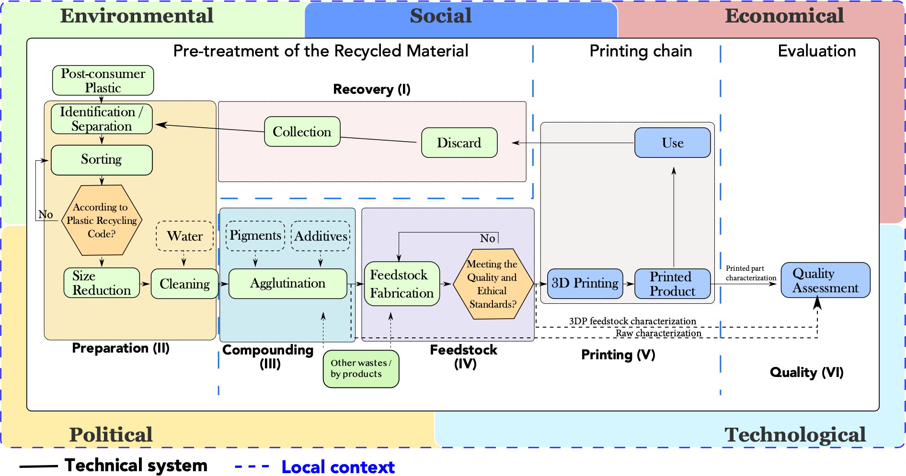

Section a: State of the art and objectives
The main purpose of the Systemic Distributed Recycling via Open Hardware (SDROM) is to establish a blueprint methodology for the design, implementation and (e)valuation of micro-value chains of distributed recycling at a urban territorial level. We seek to the achievement of a three-level target: 1) Understand the establishment of a free-open source technical ecosystem that can be printed, 2) to establish a set indicators to possible help decision-makers and in the local implementation of these initiatives in Europe/(America?), 3) …..
Section a. State-of-the-art and objectives
In the current paradigm, mass manufacturing plastic products are often globalized value creation chains. Understood as a deep transition [@kanger2022], the mass production system is the fruit of a complex co-evolution of single unit productions systems, interconnected systems, and industrial modernity that have been gradually intensified various forms of environmental degradation. However, the plastic waste contamination is one of the relevant stratigraphic indicator of what is recently considered the Anthropocene era [@de-la-torre2021;@steffen2018; @steffen2011]. The Anthropocene frames the humans not only as biological but as geological force acknowledging the new status of humanity given the different indicators in the natural ecosystems that are impacting the stability of the earth system. More precisely, the Soil and marine plastic pollution shows ecological, biogeochemical and physical thresholds and they are becoming a key component of the planetary boundaries [@ONeill2018; @raworth2017; @Rockstrom2009] threat associated with chemical pollutants. Then, the use and disposal of plastics is a societal problem characterized by high complexity and multifaceted feedback loops that calls for a systemic view of the entire plastics value chain from producers -petrochemical companies- [@Iles2013; @DeVargasMores2018], converters [@Paletta2019], brand owners or manufacturers [@Gong2020; @Ma2020], retailers and consumers [@Confente2020; @Friedrich2020; @Filho2021], and recycling operators [@Huysveld2019; @Pazienza2020], as well as the influences of policy-makers in wider economic and societal changes [@Paletta2019]. The delay that implies to put in place an alternative productive model is the main the paradox in this issue. Thus, how to manage the huge amount of waste already present in the nature and the plastic waste generated in the short term?, How to rethink production, consumption systems (and even urban future cities) based on an engineering that is concordance with the bio-geological cycles?, What are alternative trajectories for a socio-technical productive systems that take into account the natural capital and externalities[@zhen2021] since the fuzzy front-end design phase?. These scientific questions remains urgent challenges remains towards a new deep sustainable transition towards other socio-technical model.
Thus, the globalized mass manufacturing paradigm are leading to the transgression of the Therefore,
Various schools of thought are proposing alternative socio-technical manufacturing systems (and in some cases consumption), including the circular economy [@Murray2017], bioeconomy, frugal innovation and degrowth. The circular economy concept in the policy [@EC2015], industrial [@EllenMacArthurFoundation2015] and scientific [@nobre2021; @Kirchherr2017; @Schoggl2020] arenas as an umbrella concept, but also as a contested one [@CalistoFriant2020; @rodl2022; @corvellec2021].
While the first two are not directly critical to capitalism and economic growth, degrowth proponents argue that economic growth cannot be sufficiently decoupled from environmental impacts, which renders further growth of the economy unsustainable
is bouleversing the design process to make clear that the ecological systems do not have nearly endless capacity to provide resources and adsorb wastes.
Working to make cities more circular implies adopting a particular approach, using the concept of “territorial metabolism,” designating “the set of energy and material flows brought into play by the functioning of a given territory” [@refBarles].
This approach consists of understanding cities as the result of a specific socio-ecological regime, no longer solely through their functions or activities, but through their flows and stocks of materials and resources. Many cities have taken up the resource management discourse to design circular economy action plans, which aim to reduce urban environmental impacts while generating new jobs, social well-being and room for innovation. Indeed, cities worldwide are committed to becoming more circular in their resource use, but whether or not their actions help them to reduce their environmental impacts is unclear. Particularly, the main deep challengue lies in the bridging the boundaries of urban and production systems as towards a one coherent, continuum and multi-scale design process [@ref].
Open source and digital commons for ‘Design global / Manufacturing local’
The convergence of information and communication technologies (ICT) with digital fabrication capabilities of Additive Manufacturing (AM) is creating the appropriate knowledge-based social environments that enable independent production of modular hardware. This synergy could be transformed into a new disruptive paradigm of means of production for modular hardware [@Kostakis2013]. It provides the possibility of mass diffusion of this technology, and consequently, AM is being recognised as a revolutionary technology that could up-end the last two centuries of approaches to design and manufacturing with profound geopolitical, economic, social, demographic, environmental and security implications [@Pearce2014d, @Birtchnell2013a, @Garrido2010, @Campbell2011, @Rifkin,@Economist2012]
Therefore, as an alternative of globalized manufacturing values chains, a major trend in the development of production systems seeks to establish an urban production model [@Herrmann2020; @juraschek2022] with decentralized and distributed characteristics [@priavolou2022; @cerdas2017]. Aiming at a ‘design global / manufacturing local’ [@Kostakis2018] seems a proto-industrialization [@sabel1985] transition that is taking place in urban settlements that could a major impact in the next short future. The Open Source Appropriate Technology (OSAT)[@Pearce2010] and peer-to-peer (P2P)[@Kostakis2013] approaches have been seen potential drivers to propose an alternative globalisation manufacturing paradigm[@Heikkinen2020a]. The open source (OS) approach has become well-established to provide improved product innovation over proprietary product development [@dibona1999; @raymond1999; @lakhani2004; @deek2007]. The evidence is most mature for software development because free and open source software (FOSS) provides: i) diversification and open innovation [@colombo2014; @dodourova2014; @alexy2013], ii) cumulative innovation [@boudreau2016], iii) development efficiency [@hienerth2014], iv) organizational innovation [@alexy2013], v) higher technical quality of code [@soderberg2015], vi) encourages creativity [@martinez2015] and vii) perhaps most importantly, it avoids redundant work [@Ardal2016]. The OS approach is now also gaining traction in free and open source hardware (FOSH) [@thompson2011; @fisher2012; @pearce2012; @pearce2013; @li2018] and appears to be roughly 15 years behind FOSS in development and adoption [@pearce2018]. One of the primary drivers, is that all forms of free and open source technology software and hardware (FOSS and FOSH) can provide a substantial cost savings [@petch2014; @pearce2015a; @pearce2015b; @wittbrodt2013]. The open source additive manufacturing technology, also know as 3D printing, have played a major role in the idea of democratization of manufacturing means [@Beltagui2020]. In particular, material extrusion based units are widely used, thanks to the simplicity of operation, the Do-It-Yourself (DIY) approach and the open-support communities. Thousands of open-source products are shared by the global community from consumer goods to scientific[@Pearce2020a] and medical equipment[@Pearce2020a; @He2014]. This model has been proven to be effective for emergency manufacturing during the COVID-19 pandemic [@Pearce2020a; @tan2021]. This is a driver communities to fabricate their own products for less than the price of purchasing them. In that sense, the concept of urban factory is evolving as a disruptive approach and is the materialization of this manufacturing paradigm. The urban factory is defined as “a factory located in an urban environment that is actively utilizing the unique characteristics of its surroundings”. It creates products with a focus on the local market and allows customer involvement during value creation [@Herrmann2020; @Ijassi2022].
Major long vision: Convivial urban production
Today, a major societal issue rely on how to conceived socio-technical ‘circular units’ for manufacturing that integrates values of sobriety [@ref], resilience [@touriki2021; @VanFan2019], adaptability [@weichhart2021] and evolutive in urban settlements. The technologies that tend to lean towards sufficiency and creativity; adopt the open-source philosophy; are designed for affordability and durability; explore tacit knowledge; empower communities through access to means of production; and promote localisation of production and logistics; are defined as convivial [@priavolou2022a] Moreoveor, the reuse, repairing, recycling approaches will need to converge in a post-growth economy context considering the societal issues of resource scarcity and waste accumulation in the urban settlements [@kallis2018; @savini2021]. Indeed, today the establishment of these socio-technical systems need to include all ecosystem externalitites and the carrying capacity of the ecosystem to claim to sustainability [ @Bakshi2018; @Bakshi2019a]. The trend is reinforced by the fact that by 2050, it is expected that about 70% of the world’s population will live in urban settlements [@savini2021]. Urban cities will be responsible for non-negligible environmental impact [@Zheng2020; @Sodiq2019], producing about 50% of global waste, and 75% of greenhouse gas emissions which affects the sustainability of cities [@schraven2021] and the quality of city life [@Riffat2016].
Distributed recycling via additive manufacturing: a promising inclusion
Since 2014, I have been working on the validation of the open-source 3D printing, filament-[@CruzSanchez2014] and pellet-based[@Arthur2020], as a robust manufacturing system, but also as a potential enabler of the mechanical recycling [@Cruz2015;@CruzSanchez2017; @lopez2022] of plastic waste feedstock. Likewise, I have been working on the design of the pertinent closed-loop supply chain [@Pavlo2018; @Santander2020], considering the applicable sustainability indicators [@Santander2022] based on the scientific literature. In a recent paper[@CruzSanchez2020], I could highthligh a great interest by the scientific community of this topic which is called distributed recycling for additive manufacturing (DRAM). DRAM (See Figure 1) is a breakthrough promise in the constitution of a micro-circular industry units to validate the technical feasibility, and several technological pathways are maturing to allow individuals to recycle waste plastic directly by 3D-printing it into valuable products.

To appreciate the ground-breaking scientific nature of this idea, let me state that the plastic production increased at compound annual growth rate of 8.4%, passing from \(2Mt\) in 1950 to \(368Mt\) in 2019, but about 9% have been recycled while 79% was accumulated in landfills or the natural environment [@Geyer2017]. Historically, the plastic recycling has been oriented to centralized facilities in order to take advantage of economies of scale through the production of low-value products. However, it is proved to be an expensive process due to the inherent separate collection, transportation, processing and remanufacturing [@Hopewell2009; @Singh2017b]. On the other hand, DRAM can starts with local plastic waste that is produced everywhere from packaging to broken products (Recovery (I)). It is washed, dried and then ground or cut into particles using a waste plastic granulator or office shredder (Preparation (II)). The raw material for FFF can be manufactured economically using distributed means with a waste plastic extruder (often called a “recyclebot”)[@Baechler2013] for mono or composite materials (Compounding (II) and Feedstock (IV)). Filament made with a recyclebot costs less than 10 cents per kg, whereas commercial filament costs $20/kg or more. This can produce valuable products at remarkably low costs. For example, using a recyclebot/3D-printer combination can produce over 300 units (e.g., camera lens hoods) for the price of one such item listed on marketplaces (e.g. Amazon). Fused granular fabrication is a recent experimental approach enabling the printing process directly from pellets [@JustinoNetto2021;@netto2022], which reduces the degradation cycles of the plastic. For this process, I worked in the desktop format [@Arthur2020], but it seems that this technology could further expand the boundaries of additive manufacturing and eventually recycling [@billah2021; @Reich2019;@Byard2019] for larger object [@petsiuk2022].
Distributed recycling fits into the circular economy paradigm [@Zhong2018; @Garmulewicz2018; @Despeisse2016], as it eliminates most embodied energy and pollution from transportation between processing steps. Also, it decreases the embodied energy of filament by 90% compared to traditional centralized filament manufacturing using fossil fuels as inputs [@Kreiger2013; @Zhong2017;@Horta2017]. Additionaly, open-source investment should result in an extremely high return on investment (ROI)[@Pearce2020a]. This makes distributed recycling environmentally superior to other methods of plastic recycling systems.
However, I realized that the global system maturity is ambiguous given that not all the value chain for the implementation of a community-driven of plastic recycling are matured [@CruzSanchez2020]. Major efforts in the scientific literature have been only concentrated in the materials and technical validation.
However, the system validation remains to be difficult to implement. More important, the analysis of the holistic impact that this process can have in the context of a city remains not well understood. In the framework of a EUH2020 project called INEDIT1, I have been leading the implementation of the Green Fablab demostrator inside the third place called Octroi-Nancy Association 2 since November 20213. INEDIT project aims to create an ecosystem to transform the DYI practices largely documented in FabLabs/Hacker/Maker spaces into a professional approach called Do-It-Together to capitalise on the knowledge, creativity and ideas of design and engineering. The Green Fablab is a distributed recycling demostrator that that use living lab approach[@tyl2021; @compagnucci2020a] to experiment in real conditions with citizens, final users and large general public. This experiment is enframed as a design for sustainability at a socio-technical system level[@Ceschin2016]. We have collected and recycling around 100kg of plastic waste for the pedagogical and architectural uses given the fact that we are connected with a creative ecosystem of designers and makers participatin in the Octroi-Nancy projet. This hands-on experience confirms the literature that a new recycled resources industry is starting to conceived inside the cities [@wang2019b]. This industry is seen as driver consists of a series of activities related to recycled resources – e.g., recycling, refining, remanufacturing, etc. – aspiring to mitigate the negative externality caused by the linear economy. The sustainable development of the RRI has thus been highlighted on many countries’ agendas to promote the circular society [@leipold2021; @hobson2021;@jaeger-erben2021a], as well as the goals of carbon peak and carbon neutralization. In the case of plastic waste, the main difficulty remains to make affordable the use of new secondary material applicability by the industry [@klotz2022], but more profoundly, how these socio-technical experiments will interact with the urban planning process and policymaking to make concrete the ambition of circular economy inside the urban and regional settlements.
2. Ambition & objectives
The material’ rarefaction [@hultman2021], the need for ecological integration of manufacturing systems [@Bakshi2015; @Saladini2018; @Bakshi2019a] and for the urban resilience [@xu2021e] calls for pushing forward the boundaries of knowledge of the urban production systems to unleash a sustainability transition towards circular economy.Therefore, the main objective of this project is to establish a systemic methodological blueprint to fully understand how to design, implement and (e)valuate circular production systems at the urban territory based on the “Design Global / Manufacturing local” principles . The deployment of circularity marks a return to a more productive design of the city, that must consider the natural and urban ecosystem services, the strengthened of the resilience capacities and taking into account the energy sobriety of european territories. Thus, this project seeks two level targets:
The scientific understanding of the design of socio-technical configurations of convivial production/recycling systems as a resilience strategy in urban settlements.
Holistic and pluralistic (e)valuation of the open source appropriate technologies, practices and potential innovation as assets for urban territorial development.
Table XX presents an outline of the three major layers to consider in these project.
| Challenge 1: Urban systems’ role in the deployment of the circularity. |
|---|
In order to identify the design process of an urban circular production system, some relevant questions are the following:
|
| Challenge 2: Systematize the open source technodiversity as territorial asset. |
|---|
To implement an open source appropriate technology ecosystem suitable for circular urban production system, some relevant research questions are the following:
|
| Challenge 3: Pluralistic (e)valuation of circular and urban production systems. |
|---|
In order to (e)valuate in a pluralistic way the development and implementation of urban production units, some relevant questions are the following:
|
3. An Impact project
Main scientific impacts. (1) the breakthrough understating of the implementation and evaluation of the design of sustainability of distributed urban recycling systems
Main societal impacts. If the expected modeling are confirmed, the outcome of this pproject will allow urban and technical desicion-makers the implementation of local recycling circuits of available plastic waste by means of small, ro distribed recycling socio-technical units.
Section b. Methodology
3. Introduction the scientific methodology
This project implements a methodology made of four working packages (WP), as illustrated in Fig. \(\ref{fig:WPs}\). We recognize appropriate intermediate objectives (Tasks) and we individuate the specific interventions of the members of the research team. Moreover, we discuss the particular methodologies that we plan to adopt and we make a balance among the risks and gains associated to each action. The aim of WP1 is to set a baseline for an integrative and critical analysis of urban territory in the frame of micro-value chains for manufacturing/recycling production. This working package gives the insights for the WP2, and WP3, which are key of the project. The WP2 seeks to consolidate systematize a design process for OSAT for a complete distributed manufacturing/recycling process establishing an unit maturity level index, but more important, a system maturity level for the integration into an urban ecosystem. The main output is to establish a complete OSAT design framework ecosystems to valorize the waste niches opportunities identified in WP1. The WP3 aims to identify a pluralistic (e)valuation framework for the urban closed-loop system network integrating three essential issues: sustainability, resiliency, and agility into a circular economy praxis. Finally, WP4 is dedicated to the experimentation of the several case studies of the urban circular manufacturing taking as exemple into at case studies the implementation of the Green Fablab Project at the third place of OK3 at Nancy-France. The object is to replicate this analysis in other territories such Chile, in collaboration with Prof. Pavlo Santander at the university of Santiago de Chile, and in Canada with collaboration of Prof. Joshua Pearce at Western University. Work packages are synthetically detailed hereinafter. Work packages are synthetically detailed hereinafter.
WP 1: Theoretical baseline on urban value chains
Main objective: This WP deals with the development of the needed aid-decision tools to unfold the potentials micro-value chains and exchange flows induced by distributed recycling. This framework is based on the urban spatial analysis and stakeholders characteristics as an entry point. In this work package, the major output will be an aid-decision tool to possible be the input for WP2 and WP3. The steps that I will follow to develop aid-decision tool used in this project.
Task 1.1: to establish a methodological framework that close the existing data gaps in terms of secondary plastic material availability at the urban level considering its complexity level of revalorization.
The monitoring and assessing material consumption and material productivity is critical, both from a macroeconomic perspective —to assess whether sufficient action has been taken, as well as from a local perspective— to support local decision makers in setting new priorities toward long-term objectives [@Bianchi2020]. The goal is to define a {territory x material} index from a quantitative approach and urban metabolism to study resource use in a urban city. This assessment aims to quantify hotspots (availability and level of contamination) based on territorial and footprint indicators and assess scenarios for the design of a recycling closed-loop supply chain. For the case of plastic material, this is particularly relevant given ambitious circularity targets that certain governments have putting in place [@france] due to the their impact. The priority is to reveal a list of ‘suitable’ secondary materials wastes at the urban level that today are not fully understood and valorized. This analysis will be carried out at least every year, and if possible more frequently to see if there is a change or seasonality in the composition of this untreated waste.
Task 1.2: Qualitative analysis of the established valorization systems of recycling the urban territorial priorities and stakeholders in the frame of ecosystems services.
The main aim in this task is a methodological tool to align priorities in the development of urban production and urban development priorities, and in that way, to take informed decisions on the development of urban (circular) factories in a local territory.
Task 1.3: Multi-criteria analysis of the urban territorial priorities and stakeholders in the frame of ecosystems services.
The main aim in this task is a methodological tool to align priorities in the development of urban production and urban development priorities, and in that way, to take informed decisions on the development of urban (circular) factories in a local territory.
Human life and activities rely on ecosystem services (ES) provided by nature. The ecosystem services are the ecological characteristics, functions or processes that contribute (actively or passively) to the human well-being [@Costanza1997; @Costanza2017]. Ecosystem goods (e.g; Food) and services (e.g. waste assimilation) illustrate the benefits that human derive from the ecosystem functions [@Costanza1997]. The ecosystem services do not flow to human well-being without crucial interactions with the different forms of capital (Natural, Social, Human, Built), which entails the need of understanding, modelling, measuring, and managing ES in a transdisciplinary approach. Likewise, the concept of ecosystem dis-service denotes the processes and functions that affect humans in ‘negative’ way, making damage and costs [@ref]. With the concentration of people and activities in cities, these services are intensively utilized in urban space to an extent that in most cases cannot be provided by the local ecosystem. Thus, cities (and urban factories) have to rely on supply regions and connection to their hinterland. One major point that ES make clear is to raise awareness on the recognition of interdependence of human, humanity’s primary dependances on the ‘functions of’ natural capital which reflects the fact that, however they may perceive themselves, humans are part of, and not apart from, nature [@Ekins2003]. This entails the necessity to create knowledge for transdisciplinary approaches using ES as boundary object for sustainability for diverse stakeholders [@Honeck2021].
As starting point, we will analyze the sites and the territories concerned by the Green Fablab project, namely the urban community of “Grand Nancy” (CUGN). We benefit from the support of the municipality and the recognition of the project in the local area. We will be able to perform a field diagnosis of this territory to map and characterize the existing stakeholders needs, a SWOT analysis (Strengths, Weaknesses, Opportunities, and Threats) including technical, economic and environmental evaluations of the existing value chains, to understand where the value chain could be positioned in the future. This test is the first step to possible replicate the analysis for other terrotories.
WP 2: Maturity and technodiverstity level of the open source appropriate technology for the degrowth paradigm
Main objective: The WP2 will be focused on the unit- and facility-level to better understand how the design process of open source appropriate technology can be implemented in urban micro-recycling systems. Nevertheless, a future establishment of technical standards bringing clarity in this emerging and moving field is needed.
The main purpose of this task is to leverage a resilient manufacturing [@xu2021e; @zhang2011] under the logic of Design Global/Manufacture Local robustness.
To do so, three major tasks are seen:
(2.1) Design design of Open Source
definition of a scientific literature and critical analysis on the adoption and barriers of the open source appropriate technologies with particular focus on distributed recycling considering the modularity
The definition of a scientific literature and critical analysis on the adoption [@reinauer2021] and barriers of the open-source appropriate technologies with particular focus on distributed recycling considering the modularity types [@gavras2021], gaps in the hardware development and .
(2.3) Identification a system maturity level that enable the constitution of urban closed-loop supply chain .
WP 3: Pluralistic (e)valuation of distributed recycling systems
In parallel of WP2, the WP3 aims to consolidate aid-decision tool to reveal and better understand under which conditions these distributed recycling/manufacturing urban chains are pertinent for the local territory. This tool describe and characterize the new value chain to include new form of pluralism valuation [@gunton2022] and techno-ecological interactions [@Liu2020c; @Liu2019g; @Saladini2018]. More important to avoid Jevons paradox [@giampietro2018], it is determine the scale of action considering the technical maturity, economic viability and environmental respect of the ecosystem services. In (4.1), one strategical point in sustainability relies on explicitly account for their demand and supply of of ecosystem goods and services framework given by the micro-value chains [@Diwekar2021]. then (4.2), the main aim is to reveal the components and the structure of the urban circular networks to the combining Material Flow Analysis [@saidani2021], System Dynamics [@kuo2021; @marche2022; @tomoaia-cotisel2022; @castro2022a; @perez-perez2021] and Circularity Indicators [@saidani2019].
WP 4: Experimentation and deployment in function of the local territory
The WP4 aims to consolidate a starting point for a longitudinal study [@langley2013] to evaluate of the implementation these distributed recycling strategies at a urban territorial level. WP4 is devoted to the iteration and evaluation of the urban production networks to deep understand the evolution. 4.1) Several case studies of distributed fabrication / recycling will be documented and developed in complement with a comparative and contextualized Life Cycle Assessment (LCA) of the new secondary AM material compared to actual materials. 4.2) A strategic roadmap will be a major delivered to understand the possible evolution of
To pass from ecodesign to an operation design for sustainability approach, this WP4 will be based ten different models at operational, tactical, and strategical levels [@SousaRocha2019].
3. Conceptual risk and fesability assessment
SDRAM is a high operation and conceptual-risk project mainly because the integration of multiples disciplines in a one basis framework need to establish boundary object to have a coherent framework.
| ID | Risk items | Effect of the risk | Causes of the risk | Grade | Actions to minimize the risk |
|---|---|---|---|---|---|
| 1 | Difficulty to data access to local territorial diagnosis | Constraint to define WP1 | Middle | There have been pre-exists between the partners and these territories and recycling actors. | |
| 2 | |||||
| 3 |
| ID | Main challengues | Feasibility |
|---|---|---|
| 1 | Theoretical baseline on urban value chains | |
| 2 | Maturity level and technodiverstity level of the open source appropritte technology | |
| 3 | Pluralism (e)valuation of the distributed recycling systems | |
| 4 |
5. Resources and budget
The research team
The budget required for the development of SDRAM is XXX €. The most significant cost is the personnel cost (XXXX € - XX %). Minor cost cover the purchase of open hardware equipement (XXXX € - XX %), travels for dissemination of results (XXXX € - XX %), Open access fees for at least 8 publications (XXXX € - XX %). %
As for me, I will dedicate 42 p.m. of my work to manage this five-year exciting project. I will manage each phase of the project, in the full awareness of the responsibility that I will have in its successful realization, which highly depends on my capability to -humanely and scientifically- conduct, coordinate and supervise the activities carried on by the scientific team.